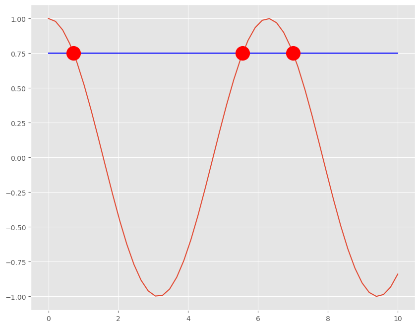

Assignment 4 rootfinding#
Download link to rootfind.ipynb
Using a rootfinder to solve implicit equations
We’ll need to use rootfinding to solve equations like finding the lifting condensation level, i.e. the level where the dewpoint=temperature. This notebook works through a simple example and sets up question 1, which asks you to use a rootfinder to find the dewpoint temperature for a given saturation vapor pressure
Documentation is here scipy.optimize.brentq
The cell below shows how to use a rootfinder to solve the equation
The algorithm evaluates the function for increasing values of x until in sees a sign change. It then backtracks to the other side of the sign change and starts increaing x again until it sees the sign change. It will stop when the change in x is below a selected tolerance
from scipy import optimize
from matplotlib import pyplot as plt
import numpy as np
plt.style.use('ggplot')
xvals=np.linspace(0,10.)
fig,ax = plt.subplots(1,1,figsize=(10,8))
ax.plot(xvals,np.cos(xvals))
straight_line=np.ones_like(xvals)
ax.plot(xvals,straight_line*0.75,'b-')
def root_function(x):
"""Function we want to find the root of
input: x value
output: y value -- should be zero when x is a root
"""
return np.cos(x) - 0.75
root1 = optimize.brentq(root_function,0,2)
root2 = optimize.brentq(root_function,4,6)
root3 = optimize.brentq(root_function,6,8)
xvals=np.array([root1,root2,root3])
yvals=np.cos(xvals)
ax.plot(xvals,yvals,'ro',markersize=20);

Problem 1 (part of assignment 4)#
Giventhe Clausius Clapeyron equation and a saturation vapor pressure \(esat\) in Pa, find the dewpoint temperature in Kelvin, i.e. the temperature where:
esat = find_esat(Tdewpoint)
def find_esat(temp):
"""
Thompkins 2.15 version of Clausius-Clapeyron equation
Parameters
----------
temp: temperature (K)
Returns
-------
esatOut: saturation vapor pressure (Pa)
"""
esatOut = 611.2 * np.exp(17.67 * Tc / (Tc + 243.5))
return esatOut
In the cell below, use the rootfinder to write this function:
def find_dewpoint(esat):
...
return Tdew
and use it to make a plot of esat (x-axis) vs dewpoint temperature (y-axis) from 5 mb to 40 mb (i.e. Thompkins Figure 2.6, but with the axes switched)
# you code here